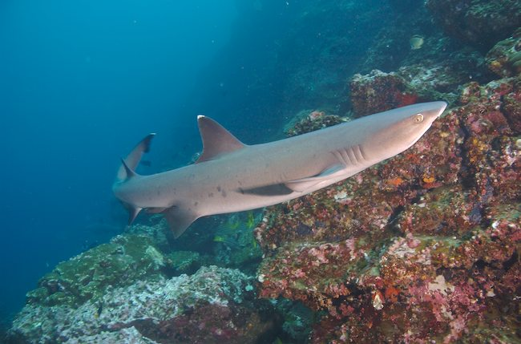

Cocos Island 2006
Index
Previous
36 of 58
Next
Image 36
Rating: 4
Badges: Adjusted Keyword
Aperture: f6.3
Shutter Speed: 1/100
Exposure Bias: 0ev
Focal Length (35mm): 27mm
Focal Length: 18mm
Keywords: Diving Cocos
Name: Cocos 2006-08-30 103307AM
Image Date: 8/30/06 11:33:07 AM GMT-06:00
ISO Speed Rating: ISO200
File Size: 5.15 MB
Master Location: Costa Rica 2006-08
